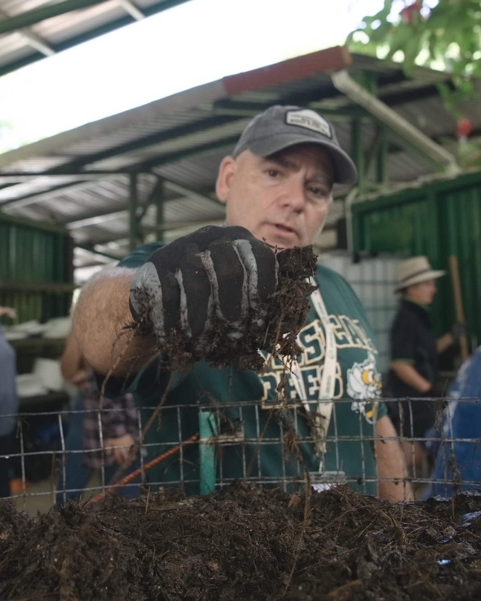
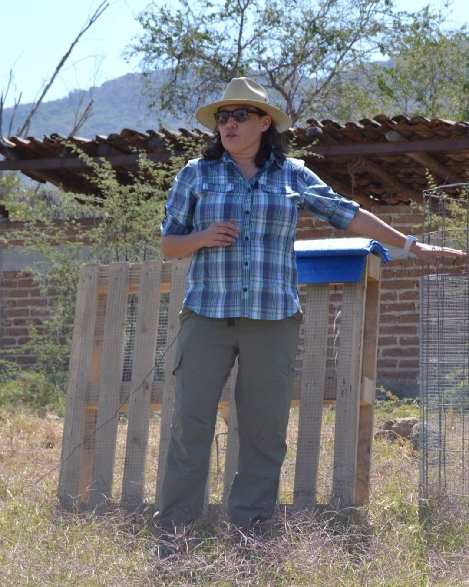

And who gets to decide?
A destinationor a direction?
A certified statusor a way of thinking?
A premium product,or a standard everyone who works the land can reach?

What does regenerative mean to you? Tell us in the comments.